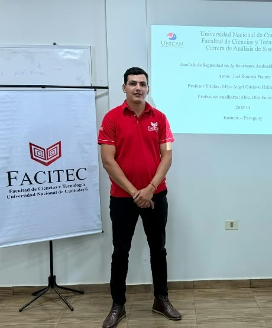

Joel Romero Franco
Desarrollador Full Stack • Especialidad en Java y Spring
Celular: 0975 351571
Correo: joel.romerorf@gmail.com
Dirección: Barrio Pionero, Katuete, Canindeyú Py
GitHub: github.com/joelromerofranco
LinkedIn: linkedin.com/in/joelromerofranco

Perfil Profesional
Desarrollador Full Stack con formación en Análisis de Sistemas en UNICAN y tesis relacionada con Informática Social. Especializado en backend con Java, Spring Boot 3 y Thymeleaf para creación de APIs REST y aplicaciones web con Spring Data JPA, Hibernate y PostgreSQL, y desarrollo frontend con JavaScript, HTML5 y CSS3. Cuento con 8 años de trayectoria laboral en Ciabay S.A. en gestión logística e inventarios, aportando madurez profesional, organización y trabajo en equipo. Disponibilidad inmediata para incorporación.
Habilidades Técnicas
Backend & Frameworks: Java, Spring Boot 3, Thymeleaf, Spring Data JPA, Hibernate ORM, Spring MVC, APIs REST, Maven.
Frontend: Thymeleaf, JavaScript moderno, HTML5 semántico, CSS3, Bootstrap, consumo de APIs Fetch y AJAX.
Bases de Datos: PostgreSQL, MySQL, Microsoft SQL Server, modelado relacional, consultas SQL.
Herramientas: Git, GitHub, Maven, Eclipse, IntelliJ IDEA, VS Code, Postman.
Arquitectura y Buenas Prácticas: Programación Orientada a Objetos, arquitectura multicapa, principios SOLID, patrones de diseño.
Experiencia Laboral
Encargado de Depósito y Logística • Ciabay S.A. Ciudad Katuete
2018 a 2026
- Control y auditoría de inventario físico y digital, asegurando exactitud de stock y trazabilidad de repuestos.
- Operación de sistemas ERP empresariales y catálogos digitales especializados para consultas técnicas.
- Planificación diaria, control de documentación mercantil y despacho eficiente de pedidos.
- Coordinación entre sucursales, administración y atención personalizada a clientes y proveedores.
- Resolución estructurada de contingencias operativas y optimización de tiempos de entrega.
Formación Académica
Análisis de Sistemas Informáticos
Facultad de Ciencia y Tecnología, Universidad Nacional de Canindeyú
Tesis en desarrollo: Informática Social
Facultad de Ciencia y Tecnología, Universidad Nacional de Canindeyú
Tesis en desarrollo: Informática Social
Idiomas
- Castellano
- Guaraní
- Portugués
Cursos y Certificaciones
- Gestión de Stock y Catálogos Digitales: CNH Academy
- Manejo de Maquinarias y Logística: Rodomaq S.A.
- Ver certificados verificables en Google Drive
Referencias Laborales
| Gloria Fiori | 0983 178013 |
| Federico Bordon | 0982 750215 |
| Christian De Los Santos | 0975 548658 |